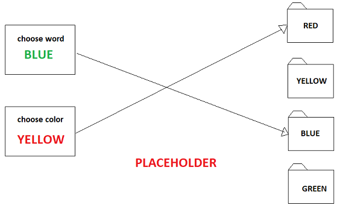
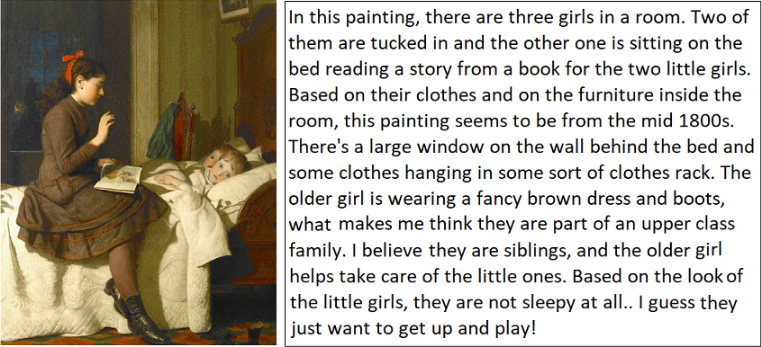

Welcome to our user study!
Introduction
The purpose of this form is to provide you with information that may affect your decision as to whether or not to participate in this research study. If you decide to participate in this study, this form will also be used to record your consent.
You have been asked to participate in a research project that investigates computer commodity devices data patterns while performing tasks in the computer. The goal of the study is to determine whether peripheral’s data can be used to model user behavior while interacting with the computer.
What you will be asked to do
By agreeing to take part in this study, you will be asked to perform simple tasks that individually should take no longer than 5 minutes to complete. The complete study should take no longer than 40 minutes.
In case you accept to be part of this study, you will first be asked to fill in a questionnaire about your affective state and computer usage. In fact, you will asked to report your affective state and work load after you finish each task. You will then will be guided to the first task, where you will perform a sorting task. In this task, you will be asked to double-click images to open them, read the instructions, and drag and drop each image into the correct folder. Each image will contain a written color name painted with an ink that does not necessarily match the color name. The instructions will inform whether you should drag the image into the folder corresponding to the color name or font color. The image below shows two examples with different instructions each.
Once you finish the sorting task, you will perform a typing task. In this task, you will be shown an painting/picture and will be asked to write about it. You can describe the elements of the picture, such as who is in it, how are their cloths, what they are doing, and are also encouraged to come up with a story about that picture. Keep in mind that you must use the full 5 minutes to perform this task - in case you finish it in less than 5 minutes a window will appear asking you to keep writing. An example of a painting and a composition about is shown below:
Next, you will be asked to watch a short video with images of the nature. Once you finish the video, you will again play the same sorting task as described earlier, but in a different modality. Finally, you will perform again the same typing task you performed earlier.
Inclusion/Exclusion criteria
Participants must be fluent English speakers. Also, participants should be at least 18 years of age.
What are the risks involved in this study
The risks associated in this study are minimal, and are not greater than risks ordinarily encountered in daily life. If you become too nervous or agitated while performing the tasks, or feel any other discomfort you may stop participating. In case of injure during the study, treatment will not be provided by the research staff. Also, no payments related to health care will be provided.
Compensation
Upon successful completion of the experiment, you will be provided $5.
Who will know about my participation in this research study?
Information about you will be kept confidential to the extent permitted or required by law. People who have access to your information include the Principal Investigator and research study personnel. Representatives of regulatory agencies such as the Office of Human Research Protections (OHRP) and entities such as the Texas A&M University Human Research Protection Program may access your records to make sure the study is being run correctly and that information is collected properly.
Whom do I contact with questions about the research?
If you have question, concerns, or complaints about this study, you may contact the Protocol Director Dennis Silva (silva.dennis@tamu.edu; phone: 979.250.2946) or the Principal Investigator Ricardo Gutierrez-Osuna (rgutier@cse.tamu.edu; phone: 979.845.2942).
Whom do I contact about my rights as a research participant?
For questions about your rights as a research participant, to provide input regarding research, or if you have questions, complaints, or concerns about the research, you may call the Texas A&M University Human Research Protection Program (HRPP) by phone at 1-979-458-4067, toll free at 1-855-795-8636, or by email at irb@tamu.edu.